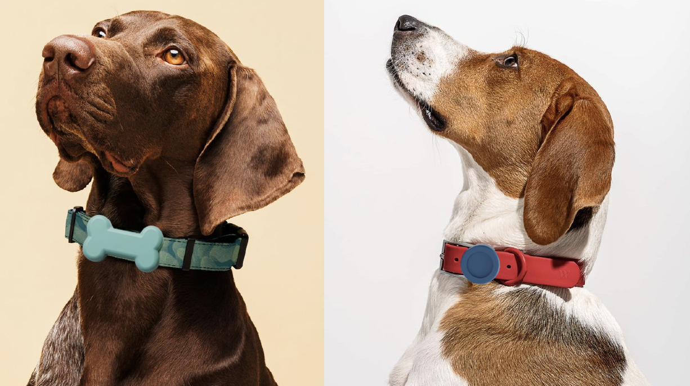

Volver a casa empieza aquí.
TAGGY es un accesorio de identificación para mascotas pensado para facilitar el contacto con sus familias cuando se separan de ellas.

TAGGY
Una nueva forma de volver a casa.
Simple para todos.
TAGGY conecta la identificación de tu mascota con información útil para facilitar su regreso.
Identifica
El accesorio permite relacionar a la mascota con información de contacto de su familia.
Reporta
Si una mascota desaparece, puedes crear un reporte con su información.
Conecta
La comunidad y las veterinarias funcionan como puntos de apoyo.
Todo en un mismo lugar.
Todo lo que quieres saber.
¿Qué datos lleva el collar?
El nombre de tu mascota y el teléfono que tú elijas, en el color de texto que prefieras.
¿Qué talla debo elegir?
Tenemos CH (pequeño), M (mediano) y G (grande). Podrás elegirla al personalizar tu pedido.
¿Qué hago si mi mascota se pierde?
Crea un reporte en la sección Reportar y compártelo con la comunidad y las veterinarias aliadas.
¿Tiene costo el envío?
No, el envío de tu pedido es gratis.